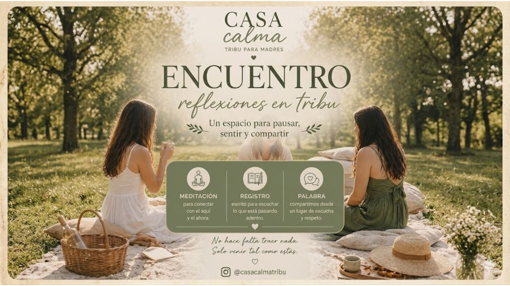

Casa Calma presenta un espacio de pertenencia pensado para conectar y compartir experiencias. En esta edición, nos encontramos para disfrutar de una tarde de pausa en un entorno que invita al diálogo.
Un momento diseñado para vos, donde la comunidad y el bienestar son el eje central, facilitado por profesionales en un ambiente privado, luminoso y cuidado.